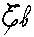
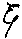
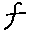
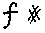
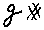
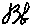
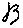
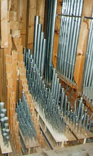
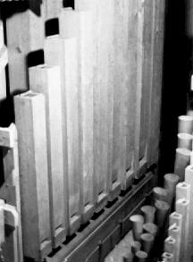
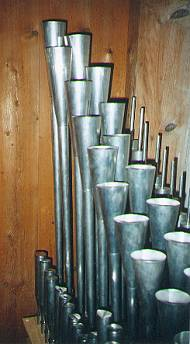

- Dans son ensemble, la tuyauterie - tant originale qu'issue de la restauration de 1992 - est d'excellente qualité.
- La taille employée dans le Prestant de quatre pieds est la même que celle de la Montre de huit mais transposée à l'octave. On peut faire le même constat pour les tuyaux de bois où le Bourdon de seize pied de pédale possède avec la Flûte et le Bourdon de huit pieds du Grand-Orgue une taille identique. La restauration de 1992 a permis à Laurent PLET de constater que ces tailles se retrouvent sur plusieurs autres instruments qu'il a été amené à étudier (Saint Jean de Maurienne, Ruly, Beaucaire).
- Conformément aux pratiques décrites par Voegeli1, toutes les tailles suivent rigoureusement la progression basée sur le rapport à l'octave égal à la racine quatrième de 8.
- Tous les tuyaux sont posés sur les sommiers auquels ils appartiennent à l'exception de la Montre de huit pieds (y compris ses quatre basses en bois postés contre les côtés du buffet). Ceci rentre parfaitement dans le cadre de l'esthétique pronée par J.G. Töpfer, maître à penser de Voegeli, dont l'attention portée à la qualité de l'alimentation des tuyaux a toujours été très importante.
- Lors de la restauration 1992, toute la tuyauterie a été harmonisée sur place, sans travail préalable au manequin.
- L'accord est bien-sûr fait dans un tempérament égal suivant en cela les pratiques des facteurs constructeurs de cet orgue. Le diapason d'origine (retrouvé sans aucun doute possible lors de la restauration de 1992 grâce aux basses du Prestant coupées au ton) est de 447 Hz. à 20° C. ce qui correspond à environ 443 Hz. à 15° C.
- Les relevés des inscriptions et des marques de la tuyauterie ont été faits sur le premier Do de chaque jeu.
| Notation et graphie des notes | |||||||||||
|---|---|---|---|---|---|---|---|---|---|---|---|
|  |  |  |  |  |  |  | |||||
| C | C# | D | Eb | E | F | F# | G | G# | A | Bb | B |
- Tous les tuyaux en bois sont en sapin, de bonne qualité, sans piqûre ni peinture.
- L'accord des tuyaux ouverts se fait par par une lame de métal roulée sur le haut du tuyau.
- Les pieds sont très courts, directement enfoncés dans la chape. Seuls les grands tuyaux (+ 2'2/3) sont maintenus par des crochets de bois sur un ratelier.
- Les lèvres inférieures sont vissées. Lors de la restauration de 1992, aucune vis ne présentait de marque d'oxydation.
- Tous les tuyaux ouverts sont coupés sur le ton, sans oreille.
- Dans la plus pure tradition allemande, tous les tuyaux bouchés sont à calottes mobile, sans oreille.
- La restauration de 1992 a permis de déterminer de façon précise l'alliage des tuyaux en métal. Celui-ci est constitué de 57% d'étain, alliage très proche du point eutectique qui ne fut pas aisé à Laurent PLET de mettre en oeuvre.
|  |
Grand Orgue
|
|
|  |  | |
|
Pédale
|
Récit
|
(1) Méthode pour la révision des orgues d'Églises, par Voegeli, Paris et Lyon, 1846.